Financial Time Series Models (ARCH/GARCH)
In this section, the goal is to determine if the GARCH model can help the dataset better. The basic work flow of this section is to compare different models within ARIMA models. Then Based on different analysis to determine whether a GARCH model can help or not. In my case, the goal is to apply the models on the following datasets: Income Stock, Home value, Sale price, Rental price. The corresponding returns are being calculated before fitting into to differnet models through model diagnostics.
Income Stock Analaysis
Prepare the Dataset
Income Stock Analsyis with Verizon
Literuature Review: Since my big picture and goal is to evaluate the correlation between Home values, prices and income to see the impact among them. Therefore, an income stock would be effective for me to get my result.
Wireless subscribers of Verizon provide a reliable base of revenue and cash flow. Verizon generated an impressive $12.4 billion of free cash flow through the first nine months of 2022, giving it the funds to reward its shareholders with $8.1 billion in dividends.
Verizon’s shares offer a hefty dividend yield (it was more than 6% in late 2022). The telecom giant has also increased its dividend for 16 straight years, the longest current streak in the U.S. telecom sector. That attractive and growing income stream makes Verizon a great stock for earning passive income.
Using this dataset, I can represent and make analysis on the income to see if the modeling can capture the pattern effectively.
Calculate the Returns
[1] "VZ" Income Stock Returns date
2016-01-05 0.013641027 2016-01-05
2016-01-06 -0.021300513 2016-01-06
2016-01-07 -0.005507228 2016-01-07
2016-01-08 -0.009766973 2016-01-08
2016-01-11 0.005782897 2016-01-11
2016-01-12 -0.003554766 2016-01-12Here, we also have the new column for returns
Code
stock$date<-as.Date(stock$date,"%Y-%m-%d")
fig <- plot_ly(stock, x = ~date, y = ~`Income Stock Returns`, name = 'Income Stock Returns From 2016', type = 'scatter', mode = 'lines') %>%
layout(
title = "Income Stock Returns From 2016",
paper_bgcolor = '#E0E0E0', # Set the background color
plot_bgcolor = '#E0E0E0', # Set the background color
xaxis = list(title = "Date"),
yaxis = list(title = "Stock returns")
)Stationarity
The plot shows no particular trend. This indicates that the series is likely stationary because the mean of the series could be constant or not changing too much over time.
Volatility
The series seems to exhibit periods of different volatility levels within expectations. However, overall, it is pretty steady throughout the time. There are some fluctuations, but the variations appear relatively stable and small.
Volatility in financial time series is often clustered; periods of high volatility are followed by periods of high volatility, and periods of low volatility are followed by periods of low volatility. This plot suggests such clustering might be present.
Prepare to fit the model and check acf and pacf
Code
returns = ts(stock$`Income Stock Returns`)
acf_plot <- ggAcf(returns) +
labs(title = "ACF for data") +
theme(
panel.background = element_rect(fill = "#E0E0E0", color = "#E0E0E0"),
plot.background = element_rect(fill = "#E0E0E0", color = "#E0E0E0")
)
pacf_plot <- ggPacf(returns) +
labs(title = "PACF for data") +
theme(
panel.background = element_rect(fill = "#E0E0E0", color = "#E0E0E0"),
plot.background = element_rect(fill = "#E0E0E0", color = "#E0E0E0")
)
# Combine the plots
grid.arrange(acf_plot, pacf_plot, ncol = 1) 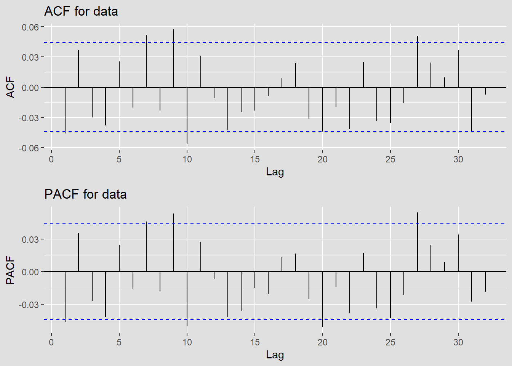
We can see that the plots for the returns are weakly stationary.
ACF of absolute values of the returns
Code
acf_plot <- ggAcf(abs(returns)) +
labs(title = "ACF for data") +
theme(
panel.background = element_rect(fill = "#E0E0E0", color = "#E0E0E0"),
plot.background = element_rect(fill = "#E0E0E0", color = "#E0E0E0")
)
pacf_plot <- ggPacf(abs(returns)) +
labs(title = "PACF for data") +
theme(
panel.background = element_rect(fill = "#E0E0E0", color = "#E0E0E0"),
plot.background = element_rect(fill = "#E0E0E0", color = "#E0E0E0")
)
# Combine the plots
grid.arrange(acf_plot, pacf_plot, ncol = 1) 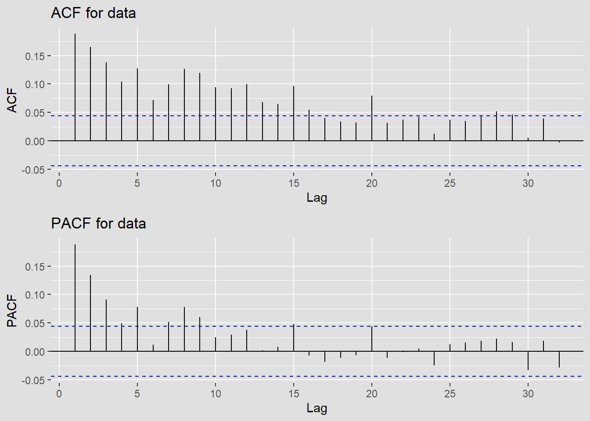
ACF for squared values
Code
acf_plot <- ggAcf(returns^2) +
labs(title = "ACF for data") +
theme(
panel.background = element_rect(fill = "#E0E0E0", color = "#E0E0E0"),
plot.background = element_rect(fill = "#E0E0E0", color = "#E0E0E0")
)
pacf_plot <- ggPacf(returns^2) +
labs(title = "PACF for data") +
theme(
panel.background = element_rect(fill = "#E0E0E0", color = "#E0E0E0"),
plot.background = element_rect(fill = "#E0E0E0", color = "#E0E0E0")
)
# Combine the plots
grid.arrange(acf_plot, pacf_plot, ncol = 1) 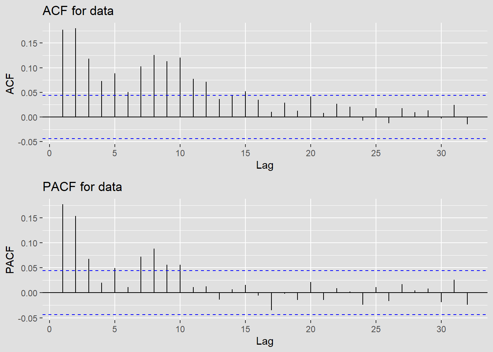
Based on the acf and pacf, we can see that the returns are weakly stationary.
Code
library(tseries)
adf.test(returns)Warning in adf.test(returns): p-value smaller than printed p-value
Augmented Dickey-Fuller Test
data: returns
Dickey-Fuller = -12.686, Lag order = 12, p-value = 0.01
alternative hypothesis: stationaryWe can see that there are little correlations left. The returns are stationary.
Fit an appropriate AR+ARCH/ARMA+GARCH or ARIMA-ARCH/GARCH
First, determine the ARIMA model using model diagnostic
Code
# Reference from the lab 6 part 1 demo:
temp.ts = returns
d=0
i=1
temp= data.frame()
ls=matrix(rep(NA,6*71),nrow=71)
for (p in 1:5)
{
for(q in 1:5)
{
for(d in 0:2)#
{
if(p-1+d+q-1<=8)
{
model<- Arima(temp.ts,order=c(p-1,d,q-1),include.drift=FALSE)
ls[i,]= c(p-1,d,q-1,model$aic,model$bic,model$aicc)
i=i+1
#print(i)
}
}
}
}
temp= as.data.frame(ls)
names(temp)= c("p","d","q","AIC","BIC","AICc")
knitr::kable(temp)| p | d | q | AIC | BIC | AICc |
|---|---|---|---|---|---|
| 0 | 0 | 0 | -11745.382 | -11734.197 | -11745.376 |
| 0 | 1 | 0 | -10278.151 | -10272.559 | -10278.149 |
| 0 | 2 | 0 | -8045.864 | -8040.273 | -8045.862 |
| 0 | 0 | 1 | -11747.304 | -11730.527 | -11747.292 |
| 0 | 1 | 1 | -11730.871 | -11719.688 | -11730.865 |
| 0 | 2 | 1 | -10262.373 | -10251.190 | -10262.367 |
| 0 | 0 | 2 | -11747.827 | -11725.458 | -11747.807 |
| 0 | 1 | 2 | -11732.784 | -11716.009 | -11732.772 |
| 0 | 2 | 2 | -11681.966 | -11665.192 | -11681.954 |
| 0 | 0 | 3 | -11748.308 | -11720.346 | -11748.277 |
| 0 | 1 | 3 | -11733.337 | -11710.970 | -11733.317 |
| 0 | 2 | 3 | -11663.255 | -11640.889 | -11663.235 |
| 0 | 0 | 4 | -11748.368 | -11714.814 | -11748.326 |
| 0 | 1 | 4 | -11733.762 | -11705.803 | -11733.732 |
| 0 | 2 | 4 | -11675.645 | -11647.688 | -11675.615 |
| 1 | 0 | 0 | -11747.576 | -11730.799 | -11747.564 |
| 1 | 1 | 0 | -10957.920 | -10946.736 | -10957.914 |
| 1 | 2 | 0 | -9368.017 | -9356.834 | -9368.011 |
| 1 | 0 | 1 | -11747.493 | -11725.123 | -11747.472 |
| 1 | 1 | 1 | -11733.042 | -11716.267 | -11733.030 |
| 1 | 2 | 1 | -10940.935 | -10924.161 | -10940.923 |
| 1 | 0 | 2 | -11746.590 | -11718.628 | -11746.560 |
| 1 | 1 | 2 | -11732.974 | -11710.607 | -11732.954 |
| 1 | 2 | 2 | -11666.519 | -11644.153 | -11666.499 |
| 1 | 0 | 3 | -11747.175 | -11713.620 | -11747.132 |
| 1 | 1 | 3 | -11734.648 | -11706.689 | -11734.618 |
| 1 | 2 | 3 | -11652.780 | -11624.823 | -11652.749 |
| 1 | 0 | 4 | -11758.279 | -11719.133 | -11758.223 |
| 1 | 1 | 4 | -11737.956 | -11704.405 | -11737.913 |
| 1 | 2 | 4 | -11698.618 | -11665.070 | -11698.575 |
| 2 | 0 | 0 | -11748.013 | -11725.644 | -11747.993 |
| 2 | 1 | 0 | -11155.537 | -11138.762 | -11155.525 |
| 2 | 2 | 0 | -9939.557 | -9922.783 | -9939.545 |
| 2 | 0 | 1 | -11746.403 | -11718.441 | -11746.373 |
| 2 | 1 | 1 | -11733.515 | -11711.147 | -11733.495 |
| 2 | 2 | 1 | -11137.912 | -11115.547 | -11137.892 |
| 2 | 0 | 2 | -11752.330 | -11718.776 | -11752.288 |
| 2 | 1 | 2 | -11729.981 | -11702.022 | -11729.950 |
| 2 | 2 | 2 | -11691.835 | -11663.878 | -11691.805 |
| 2 | 0 | 3 | -11746.133 | -11706.987 | -11746.076 |
| 2 | 1 | 3 | -11730.281 | -11696.730 | -11730.239 |
| 2 | 2 | 3 | -11691.169 | -11657.621 | -11691.127 |
| 2 | 0 | 4 | -11756.256 | -11711.517 | -11756.183 |
| 2 | 1 | 4 | -11731.122 | -11691.979 | -11731.065 |
| 2 | 2 | 4 | -11690.040 | -11650.901 | -11689.983 |
| 3 | 0 | 0 | -11747.448 | -11719.486 | -11747.417 |
| 3 | 1 | 0 | -11257.341 | -11234.974 | -11257.321 |
| 3 | 2 | 0 | -10215.582 | -10193.216 | -10215.562 |
| 3 | 0 | 1 | -11746.623 | -11713.069 | -11746.581 |
| 3 | 1 | 1 | -11732.916 | -11704.957 | -11732.886 |
| 3 | 2 | 1 | -11239.257 | -11211.301 | -11239.227 |
| 3 | 0 | 2 | -11746.236 | -11707.089 | -11746.179 |
| 3 | 1 | 2 | -11732.070 | -11698.519 | -11732.028 |
| 3 | 2 | 2 | -11684.516 | -11650.968 | -11684.473 |
| 3 | 0 | 3 | -11744.189 | -11699.451 | -11744.117 |
| 3 | 1 | 3 | -11724.890 | -11685.747 | -11724.833 |
| 3 | 2 | 3 | -11693.643 | -11654.503 | -11693.586 |
| 3 | 0 | 4 | -11755.169 | -11704.838 | -11755.078 |
| 3 | 1 | 4 | -11719.422 | -11674.687 | -11719.349 |
| 4 | 0 | 0 | -11748.903 | -11715.349 | -11748.860 |
| 4 | 1 | 0 | -11370.038 | -11342.078 | -11370.007 |
| 4 | 2 | 0 | -10473.688 | -10445.731 | -10473.658 |
| 4 | 0 | 1 | -11759.226 | -11720.079 | -11759.169 |
| 4 | 1 | 1 | -11734.363 | -11700.811 | -11734.320 |
| 4 | 2 | 1 | -11351.471 | -11317.923 | -11351.429 |
| 4 | 0 | 2 | -11757.224 | -11712.485 | -11757.151 |
| 4 | 1 | 2 | -11744.694 | -11705.551 | -11744.637 |
| 4 | 2 | 2 | -11692.959 | -11653.820 | -11692.903 |
| 4 | 0 | 3 | -11755.526 | -11705.194 | -11755.435 |
| 4 | 1 | 3 | -11741.229 | -11696.494 | -11741.156 |
| 4 | 0 | 4 | -11759.351 | -11703.428 | -11759.240 |
Evaluations using AIC, BIC, and AICc
p d q AIC BIC AICc
71 4 0 4 -11759.35 -11703.43 -11759.24 p d q AIC BIC AICc
1 0 0 0 -11745.38 -11734.2 -11745.38 p d q AIC BIC AICc
71 4 0 4 -11759.35 -11703.43 -11759.24We can see that for (4,0,4) has the lowest AIC and AICc. For (0,0,0), it has the lowest BIC. Therefore we should compare them.
Compare ARIMA Models for (4,0,4) and ARIMA (0,0,0)
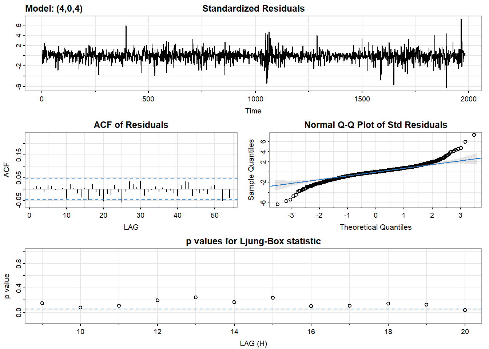
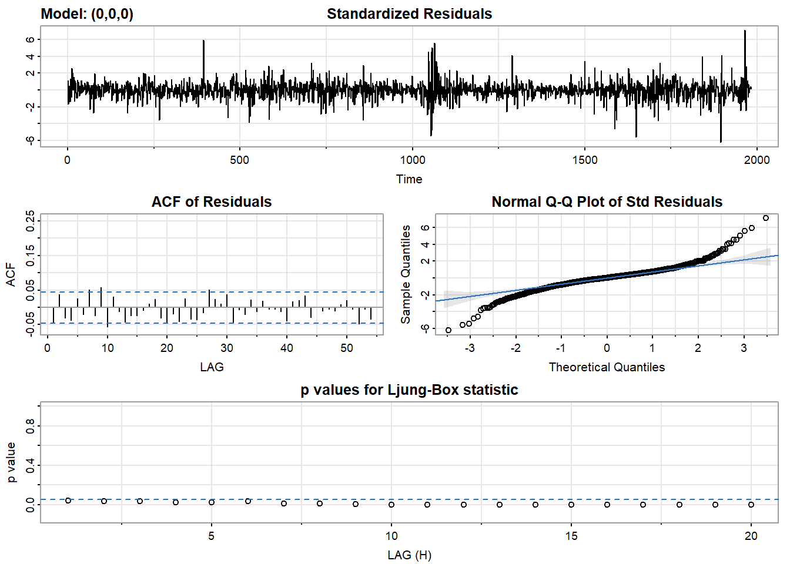
final value -4.389022
stopped after 100 iterations
$fit
Call:
arima(x = xdata, order = c(p, d, q), seasonal = list(order = c(P, D, Q), period = S),
xreg = xmean, include.mean = FALSE, transform.pars = trans, fixed = fixed,
optim.control = list(trace = trc, REPORT = 1, reltol = tol))
Coefficients:
ar1 ar2 ar3 ar4 ma1 ma2 ma3 ma4 xmean
-0.259 0.8386 -0.2731 -0.8354 0.2154 -0.8339 0.2782 0.7779 -1e-04
s.e. NaN 0.0636 NaN 0.0753 NaN 0.0720 NaN 0.0891 3e-04
sigma^2 estimated as 0.0001541: log likelihood = 5889.68, aic = -11759.35
$degrees_of_freedom
[1] 1974
$ttable
Estimate SE t.value p.value
ar1 -0.2590 NaN NaN NaN
ar2 0.8386 0.0636 13.1812 0.0000
ar3 -0.2731 NaN NaN NaN
ar4 -0.8354 0.0753 -11.0975 0.0000
ma1 0.2154 NaN NaN NaN
ma2 -0.8339 0.0720 -11.5739 0.0000
ma3 0.2782 NaN NaN NaN
ma4 0.7779 0.0891 8.7279 0.0000
xmean -0.0001 0.0003 -0.4742 0.6354
$AIC
[1] -5.930081
$AICc
[1] -5.930035
$BIC
[1] -5.90188
NA
sigma^2 estimated as 0.0001564: log likelihood = 5874.69, aic = -11745.38
$degrees_of_freedom
[1] 1982
$ttable
Estimate SE t.value p.value
xmean -1e-04 3e-04 -0.4223 0.6729
$AIC
[1] -5.923037
$AICc
[1] -5.923036
$BIC
[1] -5.917396Based on the model comparsion and diagnostic, I think that ARIMA Models for (4,0,4) is better with smaller evaluation matrices and it is more suitable and proper based on acf and pacf plots. In addition, the acf of residule is also more stationary.
Fit the best one ARIMA(4,0,4)
Code
fit2 <- arima(temp.ts, order = c(4,0,4))
summary(fit2)
Call:
arima(x = temp.ts, order = c(4, 0, 4))
Coefficients:
ar1 ar2 ar3 ar4 ma1 ma2 ma3 ma4
-0.259 0.8386 -0.2731 -0.8354 0.2154 -0.8339 0.2782 0.7779
s.e. NaN 0.0636 NaN 0.0753 NaN 0.0720 NaN 0.0891
intercept
-1e-04
s.e. 3e-04
sigma^2 estimated as 0.0001541: log likelihood = 5889.68, aic = -11759.35
Training set error measures:
ME RMSE MAE MPE MAPE MASE ACF1
Training set 5.06567e-06 0.01241243 0.008686146 NaN Inf 0.6859388 0.003727206get the residuals of the arima model
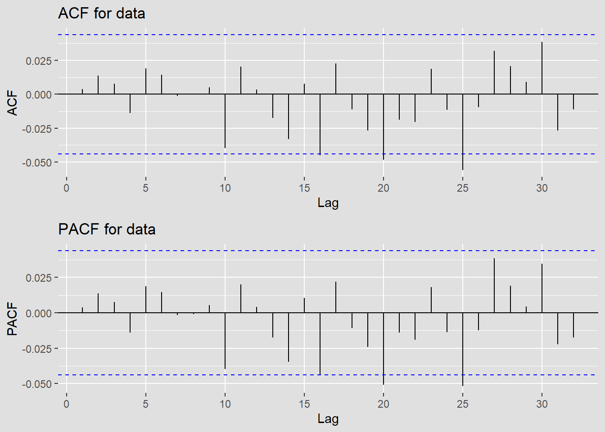
We can see that mostly, the residual is stationary however the residuals of ARIMA model indicates some flutucations. In this case, I think that we can try to fit an ARCH/GARCH model.
Therefore, I think we can further making analysis by adding GARCH models to see if we should use it.
Model Diagnostics For ARCH/GARCH model
Acf and pacf for squared residuals

We can see that it is not yet stationary for squared residuals. GARCH model can be applied.
However, no matter what, I still think that I should make a further diagnostic and compare the results.
Code
mean_res <- mean(arima.res, na.rm = TRUE)
sd_res <- sd(arima.res, na.rm = TRUE)
# Normalize the residuals
arima.res <- (arima.res - mean_res) / sd_res
model <- list() ## set counter
cc <- 1
for (p in 1:7) {
for (q in 1:7) {
model[[cc]] <- garch(arima.res,order=c(q,p),trace=F)
cc <- cc + 1
}
}
## get AIC values for model evaluation
GARCH_AIC <- sapply(model, AIC) ## model with lowest AIC is the best[1] 35
Call:
garch(x = arima.res, order = c(q, p), trace = F)
Coefficient(s):
a0 a1 a2 a3 a4 a5 b1
3.258e-01 1.697e-01 5.803e-02 4.661e-02 8.038e-03 1.044e-01 3.080e-03
b2 b3 b4 b5 b6 b7
1.078e-14 6.203e-02 2.340e-02 1.280e-02 3.958e-02 1.607e-01 From here, I think that garch(5,6) is a good choice
NOTE: Packages 'fBasics', 'timeDate', and 'timeSeries' are no longer
attached to the search() path when 'fGarch' is attached.
If needed attach them yourself in your R script by e.g.,
require("timeSeries")
Attaching package: 'fGarch'The following object is masked from 'package:TTR':
volatility
Title:
GARCH Modelling
Call:
garchFit(formula = ~garch(5, 6), data = arima.res, trace = F)
Mean and Variance Equation:
data ~ garch(5, 6)
<environment: 0x000001e53c78d300>
[data = arima.res]
Conditional Distribution:
norm
Coefficient(s):
mu omega alpha1 alpha2 alpha3 alpha4
-1.6874e-16 2.2543e-01 1.3768e-01 5.5858e-02 2.9213e-02 1.0000e-08
alpha5 beta1 beta2 beta3 beta4 beta5
7.5133e-02 1.0000e-08 1.0000e-08 3.1469e-01 1.6925e-01 1.0000e-08
beta6
1.0000e-08
Std. Errors:
based on Hessian
Error Analysis:
Estimate Std. Error t value Pr(>|t|)
mu -1.687e-16 2.052e-02 0.000 1.000000
omega 2.254e-01 2.805e-01 0.804 0.421614
alpha1 1.377e-01 3.905e-02 3.525 0.000423 ***
alpha2 5.586e-02 9.879e-02 0.565 0.571769
alpha3 2.921e-02 1.250e-01 0.234 0.815173
alpha4 1.000e-08 1.262e-01 0.000 1.000000
alpha5 7.513e-02 6.684e-02 1.124 0.260997
beta1 1.000e-08 7.142e-01 0.000 1.000000
beta2 1.000e-08 3.978e-01 0.000 1.000000
beta3 3.147e-01 1.955e-01 1.610 0.107500
beta4 1.692e-01 2.506e-01 0.675 0.499448
beta5 1.000e-08 4.406e-01 0.000 1.000000
beta6 1.000e-08 NaN NaN NaN
---
Signif. codes: 0 '***' 0.001 '**' 0.01 '*' 0.05 '.' 0.1 ' ' 1
Log Likelihood:
-2704.735 normalized: -1.363961
Description:
Mon Nov 20 22:34:29 2023 by user: yzh20
Standardised Residuals Tests:
Statistic p-Value
Jarque-Bera Test R Chi^2 1567.0838773 0.00000000
Shapiro-Wilk Test R W 0.9555035 0.00000000
Ljung-Box Test R Q(10) 7.4317759 0.68415000
Ljung-Box Test R Q(15) 12.8665717 0.61260318
Ljung-Box Test R Q(20) 28.7236060 0.09334599
Ljung-Box Test R^2 Q(10) 2.5905318 0.98948975
Ljung-Box Test R^2 Q(15) 5.0826087 0.99140358
Ljung-Box Test R^2 Q(20) 6.2308460 0.99854770
LM Arch Test R TR^2 3.5306982 0.99049639
Information Criterion Statistics:
AIC BIC SIC HQIC
2.741034 2.777696 2.740949 2.754502 The results shows that (5,6) is not an optimal fit. The coefficients are not significant.
Therefore, let us try GARCH(1,2) and GARCH(1,1)
Try to compare with Garch(1,1),Garch(1,2)
Title:
GARCH Modelling
Call:
garchFit(formula = ~garch(1, 1), data = arima.res, trace = F)
Mean and Variance Equation:
data ~ garch(1, 1)
<environment: 0x000001e53b4e6680>
[data = arima.res]
Conditional Distribution:
norm
Coefficient(s):
mu omega alpha1 beta1
-1.6874e-16 9.3778e-02 1.0948e-01 7.9863e-01
Std. Errors:
based on Hessian
Error Analysis:
Estimate Std. Error t value Pr(>|t|)
mu -1.687e-16 2.030e-02 0.000 1.00000
omega 9.378e-02 2.893e-02 3.241 0.00119 **
alpha1 1.095e-01 2.170e-02 5.045 4.53e-07 ***
beta1 7.986e-01 4.545e-02 17.570 < 2e-16 ***
---
Signif. codes: 0 '***' 0.001 '**' 0.01 '*' 0.05 '.' 0.1 ' ' 1
Log Likelihood:
-2713.414 normalized: -1.368338
Description:
Mon Nov 20 22:34:29 2023 by user: yzh20
Standardised Residuals Tests:
Statistic p-Value
Jarque-Bera Test R Chi^2 1842.376562 0.0000000
Shapiro-Wilk Test R W 0.952537 0.0000000
Ljung-Box Test R Q(10) 7.407214 0.6865228
Ljung-Box Test R Q(15) 12.974946 0.6042332
Ljung-Box Test R Q(20) 28.397143 0.1003264
Ljung-Box Test R^2 Q(10) 3.461572 0.9683871
Ljung-Box Test R^2 Q(15) 6.479211 0.9705262
Ljung-Box Test R^2 Q(20) 7.857064 0.9927719
LM Arch Test R TR^2 4.561534 0.9710469
Information Criterion Statistics:
AIC BIC SIC HQIC
2.740710 2.751991 2.740702 2.744854
Title:
GARCH Modelling
Call:
garchFit(formula = ~garch(1, 2), data = arima.res, trace = F)
Mean and Variance Equation:
data ~ garch(1, 2)
<environment: 0x000001e53c5493c0>
[data = arima.res]
Conditional Distribution:
norm
Coefficient(s):
mu omega alpha1 beta1 beta2
-1.6874e-16 1.2838e-01 1.5585e-01 2.8817e-01 4.3124e-01
Std. Errors:
based on Hessian
Error Analysis:
Estimate Std. Error t value Pr(>|t|)
mu -1.687e-16 2.027e-02 0.000 1.000000
omega 1.284e-01 4.092e-02 3.137 0.001706 **
alpha1 1.559e-01 3.167e-02 4.922 8.58e-07 ***
beta1 2.882e-01 1.383e-01 2.083 0.037258 *
beta2 4.312e-01 1.199e-01 3.598 0.000321 ***
---
Signif. codes: 0 '***' 0.001 '**' 0.01 '*' 0.05 '.' 0.1 ' ' 1
Log Likelihood:
-2711.124 normalized: -1.367183
Description:
Mon Nov 20 22:34:30 2023 by user: yzh20
Standardised Residuals Tests:
Statistic p-Value
Jarque-Bera Test R Chi^2 1736.0814311 0.0000000
Shapiro-Wilk Test R W 0.9536721 0.0000000
Ljung-Box Test R Q(10) 7.0492350 0.7207888
Ljung-Box Test R Q(15) 12.5374314 0.6379784
Ljung-Box Test R Q(20) 27.7833434 0.1146281
Ljung-Box Test R^2 Q(10) 4.7226574 0.9089183
Ljung-Box Test R^2 Q(15) 7.8011003 0.9315089
Ljung-Box Test R^2 Q(20) 9.0154593 0.9827275
LM Arch Test R TR^2 6.1485452 0.9084094
Information Criterion Statistics:
AIC BIC SIC HQIC
2.739409 2.753510 2.739396 2.744589 Now, it seems that the GARCH(1,2) is better with more siginificant components.
Final Model: ARIMA (4,0,4) + GARCH(1,2)
The final model consist of the ARIMA modeling with no differencing and the GARCH model. This model combined the two different models to evaluate and capture the returns. The final one is better than the separate ones.
Forecast: ARIMA (4,0,4) + GARCH(1,2)
Code
final.fit <- garchFit(~garch(1,2), arima.res,trace = F)
predict(final.fit, n.ahead = 365, plot=TRUE)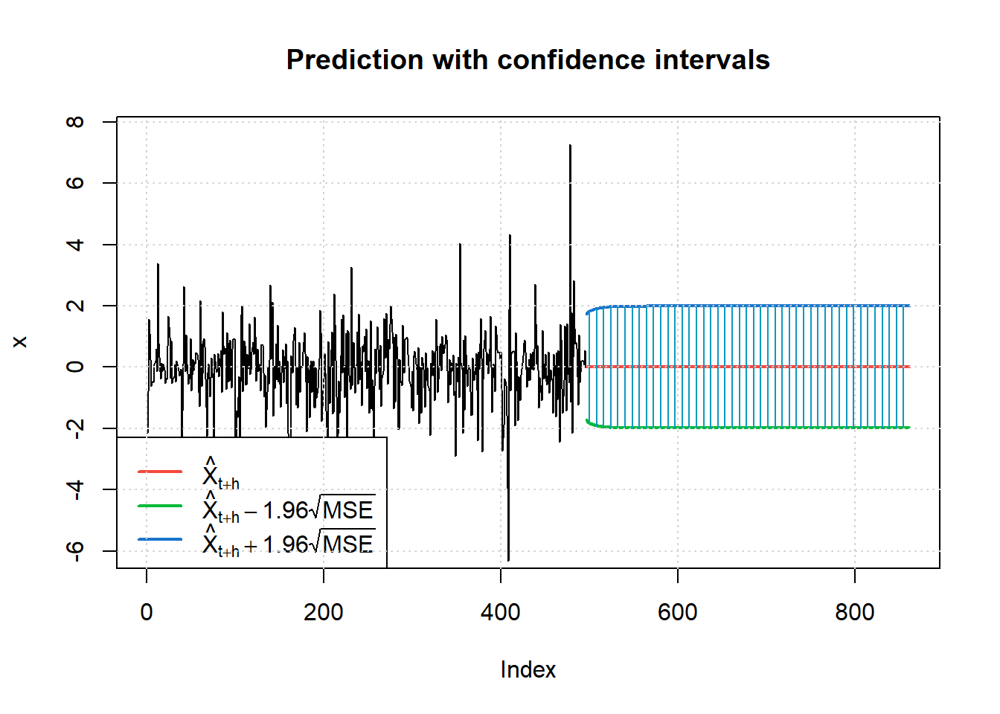
meanForecast meanError standardDeviation lowerInterval upperInterval
1 -1.687411e-16 0.8793496 0.8793496 -1.723494 1.723494
2 -1.687411e-16 0.9211444 0.9211444 -1.805410 1.805410
3 -1.687411e-16 0.9157470 0.9157470 -1.794831 1.794831
4 -1.687411e-16 0.9309361 0.9309361 -1.824601 1.824601
5 -1.687411e-16 0.9353186 0.9353186 -1.833191 1.833191
6 -1.687411e-16 0.9436888 0.9436888 -1.849596 1.849596
7 -1.687411e-16 0.9492413 0.9492413 -1.860479 1.860479
8 -1.687411e-16 0.9552530 0.9552530 -1.872261 1.872261
9 -1.687411e-16 0.9602731 0.9602731 -1.882101 1.882101
10 -1.687411e-16 0.9650553 0.9650553 -1.891474 1.891474
11 -1.687411e-16 0.9693126 0.9693126 -1.899818 1.899818
12 -1.687411e-16 0.9732389 0.9732389 -1.907513 1.907513
13 -1.687411e-16 0.9767967 0.9767967 -1.914486 1.914486
14 -1.687411e-16 0.9800518 0.9800518 -1.920866 1.920866
15 -1.687411e-16 0.9830166 0.9830166 -1.926677 1.926677
16 -1.687411e-16 0.9857245 0.9857245 -1.931984 1.931984
17 -1.687411e-16 0.9881952 0.9881952 -1.936827 1.936827
18 -1.687411e-16 0.9904515 0.9904515 -1.941249 1.941249
19 -1.687411e-16 0.9925118 0.9925118 -1.945287 1.945287
20 -1.687411e-16 0.9943938 0.9943938 -1.948976 1.948976
21 -1.687411e-16 0.9961130 0.9961130 -1.952346 1.952346
22 -1.687411e-16 0.9976839 0.9976839 -1.955425 1.955425
23 -1.687411e-16 0.9991195 0.9991195 -1.958238 1.958238
24 -1.687411e-16 1.0004315 1.0004315 -1.960810 1.960810
25 -1.687411e-16 1.0016307 1.0016307 -1.963160 1.963160
26 -1.687411e-16 1.0027270 1.0027270 -1.965309 1.965309
27 -1.687411e-16 1.0037294 1.0037294 -1.967273 1.967273
28 -1.687411e-16 1.0046458 1.0046458 -1.969070 1.969070
29 -1.687411e-16 1.0054838 1.0054838 -1.970712 1.970712
30 -1.687411e-16 1.0062502 1.0062502 -1.972214 1.972214
31 -1.687411e-16 1.0069511 1.0069511 -1.973588 1.973588
32 -1.687411e-16 1.0075921 1.0075921 -1.974844 1.974844
33 -1.687411e-16 1.0081784 1.0081784 -1.975993 1.975993
34 -1.687411e-16 1.0087147 1.0087147 -1.977044 1.977044
35 -1.687411e-16 1.0092053 1.0092053 -1.978006 1.978006
36 -1.687411e-16 1.0096540 1.0096540 -1.978886 1.978886
37 -1.687411e-16 1.0100646 1.0100646 -1.979690 1.979690
38 -1.687411e-16 1.0104402 1.0104402 -1.980426 1.980426
39 -1.687411e-16 1.0107838 1.0107838 -1.981100 1.981100
40 -1.687411e-16 1.0110982 1.0110982 -1.981716 1.981716
41 -1.687411e-16 1.0113858 1.0113858 -1.982280 1.982280
42 -1.687411e-16 1.0116490 1.0116490 -1.982796 1.982796
43 -1.687411e-16 1.0118898 1.0118898 -1.983268 1.983268
44 -1.687411e-16 1.0121101 1.0121101 -1.983699 1.983699
45 -1.687411e-16 1.0123118 1.0123118 -1.984095 1.984095
46 -1.687411e-16 1.0124962 1.0124962 -1.984456 1.984456
47 -1.687411e-16 1.0126651 1.0126651 -1.984787 1.984787
48 -1.687411e-16 1.0128195 1.0128195 -1.985090 1.985090
49 -1.687411e-16 1.0129609 1.0129609 -1.985367 1.985367
50 -1.687411e-16 1.0130902 1.0130902 -1.985620 1.985620
51 -1.687411e-16 1.0132086 1.0132086 -1.985852 1.985852
52 -1.687411e-16 1.0133169 1.0133169 -1.986065 1.986065
53 -1.687411e-16 1.0134161 1.0134161 -1.986259 1.986259
54 -1.687411e-16 1.0135068 1.0135068 -1.986437 1.986437
55 -1.687411e-16 1.0135898 1.0135898 -1.986600 1.986600
56 -1.687411e-16 1.0136658 1.0136658 -1.986748 1.986748
57 -1.687411e-16 1.0137353 1.0137353 -1.986885 1.986885
58 -1.687411e-16 1.0137989 1.0137989 -1.987009 1.987009
59 -1.687411e-16 1.0138572 1.0138572 -1.987124 1.987124
60 -1.687411e-16 1.0139105 1.0139105 -1.987228 1.987228
61 -1.687411e-16 1.0139592 1.0139592 -1.987324 1.987324
62 -1.687411e-16 1.0140039 1.0140039 -1.987411 1.987411
63 -1.687411e-16 1.0140447 1.0140447 -1.987491 1.987491
64 -1.687411e-16 1.0140821 1.0140821 -1.987564 1.987564
65 -1.687411e-16 1.0141163 1.0141163 -1.987631 1.987631
66 -1.687411e-16 1.0141476 1.0141476 -1.987693 1.987693
67 -1.687411e-16 1.0141763 1.0141763 -1.987749 1.987749
68 -1.687411e-16 1.0142025 1.0142025 -1.987800 1.987800
69 -1.687411e-16 1.0142265 1.0142265 -1.987847 1.987847
70 -1.687411e-16 1.0142484 1.0142484 -1.987890 1.987890
71 -1.687411e-16 1.0142685 1.0142685 -1.987930 1.987930
72 -1.687411e-16 1.0142869 1.0142869 -1.987966 1.987966
73 -1.687411e-16 1.0143038 1.0143038 -1.987999 1.987999
74 -1.687411e-16 1.0143192 1.0143192 -1.988029 1.988029
75 -1.687411e-16 1.0143333 1.0143333 -1.988057 1.988057
76 -1.687411e-16 1.0143462 1.0143462 -1.988082 1.988082
77 -1.687411e-16 1.0143580 1.0143580 -1.988105 1.988105
78 -1.687411e-16 1.0143688 1.0143688 -1.988126 1.988126
79 -1.687411e-16 1.0143787 1.0143787 -1.988146 1.988146
80 -1.687411e-16 1.0143878 1.0143878 -1.988163 1.988163
81 -1.687411e-16 1.0143960 1.0143960 -1.988180 1.988180
82 -1.687411e-16 1.0144036 1.0144036 -1.988195 1.988195
83 -1.687411e-16 1.0144106 1.0144106 -1.988208 1.988208
84 -1.687411e-16 1.0144169 1.0144169 -1.988221 1.988221
85 -1.687411e-16 1.0144227 1.0144227 -1.988232 1.988232
86 -1.687411e-16 1.0144281 1.0144281 -1.988242 1.988242
87 -1.687411e-16 1.0144329 1.0144329 -1.988252 1.988252
88 -1.687411e-16 1.0144374 1.0144374 -1.988261 1.988261
89 -1.687411e-16 1.0144415 1.0144415 -1.988269 1.988269
90 -1.687411e-16 1.0144452 1.0144452 -1.988276 1.988276
91 -1.687411e-16 1.0144486 1.0144486 -1.988283 1.988283
92 -1.687411e-16 1.0144517 1.0144517 -1.988289 1.988289
93 -1.687411e-16 1.0144546 1.0144546 -1.988294 1.988294
94 -1.687411e-16 1.0144572 1.0144572 -1.988300 1.988300
95 -1.687411e-16 1.0144596 1.0144596 -1.988304 1.988304
96 -1.687411e-16 1.0144618 1.0144618 -1.988309 1.988309
97 -1.687411e-16 1.0144638 1.0144638 -1.988313 1.988313
98 -1.687411e-16 1.0144656 1.0144656 -1.988316 1.988316
99 -1.687411e-16 1.0144673 1.0144673 -1.988319 1.988319
100 -1.687411e-16 1.0144689 1.0144689 -1.988322 1.988322
101 -1.687411e-16 1.0144703 1.0144703 -1.988325 1.988325
102 -1.687411e-16 1.0144716 1.0144716 -1.988328 1.988328
103 -1.687411e-16 1.0144727 1.0144727 -1.988330 1.988330
104 -1.687411e-16 1.0144738 1.0144738 -1.988332 1.988332
105 -1.687411e-16 1.0144748 1.0144748 -1.988334 1.988334
106 -1.687411e-16 1.0144757 1.0144757 -1.988336 1.988336
107 -1.687411e-16 1.0144765 1.0144765 -1.988337 1.988337
108 -1.687411e-16 1.0144773 1.0144773 -1.988339 1.988339
109 -1.687411e-16 1.0144780 1.0144780 -1.988340 1.988340
110 -1.687411e-16 1.0144786 1.0144786 -1.988342 1.988342
111 -1.687411e-16 1.0144792 1.0144792 -1.988343 1.988343
112 -1.687411e-16 1.0144797 1.0144797 -1.988344 1.988344
113 -1.687411e-16 1.0144802 1.0144802 -1.988345 1.988345
114 -1.687411e-16 1.0144807 1.0144807 -1.988346 1.988346
115 -1.687411e-16 1.0144811 1.0144811 -1.988346 1.988346
116 -1.687411e-16 1.0144815 1.0144815 -1.988347 1.988347
117 -1.687411e-16 1.0144818 1.0144818 -1.988348 1.988348
118 -1.687411e-16 1.0144821 1.0144821 -1.988348 1.988348
119 -1.687411e-16 1.0144824 1.0144824 -1.988349 1.988349
120 -1.687411e-16 1.0144827 1.0144827 -1.988349 1.988349
121 -1.687411e-16 1.0144829 1.0144829 -1.988350 1.988350
122 -1.687411e-16 1.0144831 1.0144831 -1.988350 1.988350
123 -1.687411e-16 1.0144833 1.0144833 -1.988351 1.988351
124 -1.687411e-16 1.0144835 1.0144835 -1.988351 1.988351
125 -1.687411e-16 1.0144837 1.0144837 -1.988351 1.988351
126 -1.687411e-16 1.0144838 1.0144838 -1.988352 1.988352
127 -1.687411e-16 1.0144840 1.0144840 -1.988352 1.988352
128 -1.687411e-16 1.0144841 1.0144841 -1.988352 1.988352
129 -1.687411e-16 1.0144842 1.0144842 -1.988353 1.988353
130 -1.687411e-16 1.0144843 1.0144843 -1.988353 1.988353
131 -1.687411e-16 1.0144844 1.0144844 -1.988353 1.988353
132 -1.687411e-16 1.0144845 1.0144845 -1.988353 1.988353
133 -1.687411e-16 1.0144846 1.0144846 -1.988353 1.988353
134 -1.687411e-16 1.0144847 1.0144847 -1.988353 1.988353
135 -1.687411e-16 1.0144847 1.0144847 -1.988354 1.988354
136 -1.687411e-16 1.0144848 1.0144848 -1.988354 1.988354
137 -1.687411e-16 1.0144849 1.0144849 -1.988354 1.988354
138 -1.687411e-16 1.0144849 1.0144849 -1.988354 1.988354
139 -1.687411e-16 1.0144850 1.0144850 -1.988354 1.988354
140 -1.687411e-16 1.0144850 1.0144850 -1.988354 1.988354
141 -1.687411e-16 1.0144850 1.0144850 -1.988354 1.988354
142 -1.687411e-16 1.0144851 1.0144851 -1.988354 1.988354
143 -1.687411e-16 1.0144851 1.0144851 -1.988354 1.988354
144 -1.687411e-16 1.0144851 1.0144851 -1.988354 1.988354
145 -1.687411e-16 1.0144852 1.0144852 -1.988354 1.988354
146 -1.687411e-16 1.0144852 1.0144852 -1.988354 1.988354
147 -1.687411e-16 1.0144852 1.0144852 -1.988355 1.988355
148 -1.687411e-16 1.0144852 1.0144852 -1.988355 1.988355
149 -1.687411e-16 1.0144853 1.0144853 -1.988355 1.988355
150 -1.687411e-16 1.0144853 1.0144853 -1.988355 1.988355
151 -1.687411e-16 1.0144853 1.0144853 -1.988355 1.988355
152 -1.687411e-16 1.0144853 1.0144853 -1.988355 1.988355
153 -1.687411e-16 1.0144853 1.0144853 -1.988355 1.988355
154 -1.687411e-16 1.0144853 1.0144853 -1.988355 1.988355
155 -1.687411e-16 1.0144854 1.0144854 -1.988355 1.988355
156 -1.687411e-16 1.0144854 1.0144854 -1.988355 1.988355
157 -1.687411e-16 1.0144854 1.0144854 -1.988355 1.988355
158 -1.687411e-16 1.0144854 1.0144854 -1.988355 1.988355
159 -1.687411e-16 1.0144854 1.0144854 -1.988355 1.988355
160 -1.687411e-16 1.0144854 1.0144854 -1.988355 1.988355
161 -1.687411e-16 1.0144854 1.0144854 -1.988355 1.988355
162 -1.687411e-16 1.0144854 1.0144854 -1.988355 1.988355
163 -1.687411e-16 1.0144854 1.0144854 -1.988355 1.988355
164 -1.687411e-16 1.0144854 1.0144854 -1.988355 1.988355
165 -1.687411e-16 1.0144854 1.0144854 -1.988355 1.988355
166 -1.687411e-16 1.0144854 1.0144854 -1.988355 1.988355
167 -1.687411e-16 1.0144854 1.0144854 -1.988355 1.988355
168 -1.687411e-16 1.0144854 1.0144854 -1.988355 1.988355
169 -1.687411e-16 1.0144854 1.0144854 -1.988355 1.988355
170 -1.687411e-16 1.0144854 1.0144854 -1.988355 1.988355
171 -1.687411e-16 1.0144855 1.0144855 -1.988355 1.988355
172 -1.687411e-16 1.0144855 1.0144855 -1.988355 1.988355
173 -1.687411e-16 1.0144855 1.0144855 -1.988355 1.988355
174 -1.687411e-16 1.0144855 1.0144855 -1.988355 1.988355
175 -1.687411e-16 1.0144855 1.0144855 -1.988355 1.988355
176 -1.687411e-16 1.0144855 1.0144855 -1.988355 1.988355
177 -1.687411e-16 1.0144855 1.0144855 -1.988355 1.988355
178 -1.687411e-16 1.0144855 1.0144855 -1.988355 1.988355
179 -1.687411e-16 1.0144855 1.0144855 -1.988355 1.988355
180 -1.687411e-16 1.0144855 1.0144855 -1.988355 1.988355
181 -1.687411e-16 1.0144855 1.0144855 -1.988355 1.988355
182 -1.687411e-16 1.0144855 1.0144855 -1.988355 1.988355
183 -1.687411e-16 1.0144855 1.0144855 -1.988355 1.988355
184 -1.687411e-16 1.0144855 1.0144855 -1.988355 1.988355
185 -1.687411e-16 1.0144855 1.0144855 -1.988355 1.988355
186 -1.687411e-16 1.0144855 1.0144855 -1.988355 1.988355
187 -1.687411e-16 1.0144855 1.0144855 -1.988355 1.988355
188 -1.687411e-16 1.0144855 1.0144855 -1.988355 1.988355
189 -1.687411e-16 1.0144855 1.0144855 -1.988355 1.988355
190 -1.687411e-16 1.0144855 1.0144855 -1.988355 1.988355
191 -1.687411e-16 1.0144855 1.0144855 -1.988355 1.988355
192 -1.687411e-16 1.0144855 1.0144855 -1.988355 1.988355
193 -1.687411e-16 1.0144855 1.0144855 -1.988355 1.988355
194 -1.687411e-16 1.0144855 1.0144855 -1.988355 1.988355
195 -1.687411e-16 1.0144855 1.0144855 -1.988355 1.988355
196 -1.687411e-16 1.0144855 1.0144855 -1.988355 1.988355
197 -1.687411e-16 1.0144855 1.0144855 -1.988355 1.988355
198 -1.687411e-16 1.0144855 1.0144855 -1.988355 1.988355
199 -1.687411e-16 1.0144855 1.0144855 -1.988355 1.988355
200 -1.687411e-16 1.0144855 1.0144855 -1.988355 1.988355
201 -1.687411e-16 1.0144855 1.0144855 -1.988355 1.988355
202 -1.687411e-16 1.0144855 1.0144855 -1.988355 1.988355
203 -1.687411e-16 1.0144855 1.0144855 -1.988355 1.988355
204 -1.687411e-16 1.0144855 1.0144855 -1.988355 1.988355
205 -1.687411e-16 1.0144855 1.0144855 -1.988355 1.988355
206 -1.687411e-16 1.0144855 1.0144855 -1.988355 1.988355
207 -1.687411e-16 1.0144855 1.0144855 -1.988355 1.988355
208 -1.687411e-16 1.0144855 1.0144855 -1.988355 1.988355
209 -1.687411e-16 1.0144855 1.0144855 -1.988355 1.988355
210 -1.687411e-16 1.0144855 1.0144855 -1.988355 1.988355
211 -1.687411e-16 1.0144855 1.0144855 -1.988355 1.988355
212 -1.687411e-16 1.0144855 1.0144855 -1.988355 1.988355
213 -1.687411e-16 1.0144855 1.0144855 -1.988355 1.988355
214 -1.687411e-16 1.0144855 1.0144855 -1.988355 1.988355
215 -1.687411e-16 1.0144855 1.0144855 -1.988355 1.988355
216 -1.687411e-16 1.0144855 1.0144855 -1.988355 1.988355
217 -1.687411e-16 1.0144855 1.0144855 -1.988355 1.988355
218 -1.687411e-16 1.0144855 1.0144855 -1.988355 1.988355
219 -1.687411e-16 1.0144855 1.0144855 -1.988355 1.988355
220 -1.687411e-16 1.0144855 1.0144855 -1.988355 1.988355
221 -1.687411e-16 1.0144855 1.0144855 -1.988355 1.988355
222 -1.687411e-16 1.0144855 1.0144855 -1.988355 1.988355
223 -1.687411e-16 1.0144855 1.0144855 -1.988355 1.988355
224 -1.687411e-16 1.0144855 1.0144855 -1.988355 1.988355
225 -1.687411e-16 1.0144855 1.0144855 -1.988355 1.988355
226 -1.687411e-16 1.0144855 1.0144855 -1.988355 1.988355
227 -1.687411e-16 1.0144855 1.0144855 -1.988355 1.988355
228 -1.687411e-16 1.0144855 1.0144855 -1.988355 1.988355
229 -1.687411e-16 1.0144855 1.0144855 -1.988355 1.988355
230 -1.687411e-16 1.0144855 1.0144855 -1.988355 1.988355
231 -1.687411e-16 1.0144855 1.0144855 -1.988355 1.988355
232 -1.687411e-16 1.0144855 1.0144855 -1.988355 1.988355
233 -1.687411e-16 1.0144855 1.0144855 -1.988355 1.988355
234 -1.687411e-16 1.0144855 1.0144855 -1.988355 1.988355
235 -1.687411e-16 1.0144855 1.0144855 -1.988355 1.988355
236 -1.687411e-16 1.0144855 1.0144855 -1.988355 1.988355
237 -1.687411e-16 1.0144855 1.0144855 -1.988355 1.988355
238 -1.687411e-16 1.0144855 1.0144855 -1.988355 1.988355
239 -1.687411e-16 1.0144855 1.0144855 -1.988355 1.988355
240 -1.687411e-16 1.0144855 1.0144855 -1.988355 1.988355
241 -1.687411e-16 1.0144855 1.0144855 -1.988355 1.988355
242 -1.687411e-16 1.0144855 1.0144855 -1.988355 1.988355
243 -1.687411e-16 1.0144855 1.0144855 -1.988355 1.988355
244 -1.687411e-16 1.0144855 1.0144855 -1.988355 1.988355
245 -1.687411e-16 1.0144855 1.0144855 -1.988355 1.988355
246 -1.687411e-16 1.0144855 1.0144855 -1.988355 1.988355
247 -1.687411e-16 1.0144855 1.0144855 -1.988355 1.988355
248 -1.687411e-16 1.0144855 1.0144855 -1.988355 1.988355
249 -1.687411e-16 1.0144855 1.0144855 -1.988355 1.988355
250 -1.687411e-16 1.0144855 1.0144855 -1.988355 1.988355
251 -1.687411e-16 1.0144855 1.0144855 -1.988355 1.988355
252 -1.687411e-16 1.0144855 1.0144855 -1.988355 1.988355
253 -1.687411e-16 1.0144855 1.0144855 -1.988355 1.988355
254 -1.687411e-16 1.0144855 1.0144855 -1.988355 1.988355
255 -1.687411e-16 1.0144855 1.0144855 -1.988355 1.988355
256 -1.687411e-16 1.0144855 1.0144855 -1.988355 1.988355
257 -1.687411e-16 1.0144855 1.0144855 -1.988355 1.988355
258 -1.687411e-16 1.0144855 1.0144855 -1.988355 1.988355
259 -1.687411e-16 1.0144855 1.0144855 -1.988355 1.988355
260 -1.687411e-16 1.0144855 1.0144855 -1.988355 1.988355
261 -1.687411e-16 1.0144855 1.0144855 -1.988355 1.988355
262 -1.687411e-16 1.0144855 1.0144855 -1.988355 1.988355
263 -1.687411e-16 1.0144855 1.0144855 -1.988355 1.988355
264 -1.687411e-16 1.0144855 1.0144855 -1.988355 1.988355
265 -1.687411e-16 1.0144855 1.0144855 -1.988355 1.988355
266 -1.687411e-16 1.0144855 1.0144855 -1.988355 1.988355
267 -1.687411e-16 1.0144855 1.0144855 -1.988355 1.988355
268 -1.687411e-16 1.0144855 1.0144855 -1.988355 1.988355
269 -1.687411e-16 1.0144855 1.0144855 -1.988355 1.988355
270 -1.687411e-16 1.0144855 1.0144855 -1.988355 1.988355
271 -1.687411e-16 1.0144855 1.0144855 -1.988355 1.988355
272 -1.687411e-16 1.0144855 1.0144855 -1.988355 1.988355
273 -1.687411e-16 1.0144855 1.0144855 -1.988355 1.988355
274 -1.687411e-16 1.0144855 1.0144855 -1.988355 1.988355
275 -1.687411e-16 1.0144855 1.0144855 -1.988355 1.988355
276 -1.687411e-16 1.0144855 1.0144855 -1.988355 1.988355
277 -1.687411e-16 1.0144855 1.0144855 -1.988355 1.988355
278 -1.687411e-16 1.0144855 1.0144855 -1.988355 1.988355
279 -1.687411e-16 1.0144855 1.0144855 -1.988355 1.988355
280 -1.687411e-16 1.0144855 1.0144855 -1.988355 1.988355
281 -1.687411e-16 1.0144855 1.0144855 -1.988355 1.988355
282 -1.687411e-16 1.0144855 1.0144855 -1.988355 1.988355
283 -1.687411e-16 1.0144855 1.0144855 -1.988355 1.988355
284 -1.687411e-16 1.0144855 1.0144855 -1.988355 1.988355
285 -1.687411e-16 1.0144855 1.0144855 -1.988355 1.988355
286 -1.687411e-16 1.0144855 1.0144855 -1.988355 1.988355
287 -1.687411e-16 1.0144855 1.0144855 -1.988355 1.988355
288 -1.687411e-16 1.0144855 1.0144855 -1.988355 1.988355
289 -1.687411e-16 1.0144855 1.0144855 -1.988355 1.988355
290 -1.687411e-16 1.0144855 1.0144855 -1.988355 1.988355
291 -1.687411e-16 1.0144855 1.0144855 -1.988355 1.988355
292 -1.687411e-16 1.0144855 1.0144855 -1.988355 1.988355
293 -1.687411e-16 1.0144855 1.0144855 -1.988355 1.988355
294 -1.687411e-16 1.0144855 1.0144855 -1.988355 1.988355
295 -1.687411e-16 1.0144855 1.0144855 -1.988355 1.988355
296 -1.687411e-16 1.0144855 1.0144855 -1.988355 1.988355
297 -1.687411e-16 1.0144855 1.0144855 -1.988355 1.988355
298 -1.687411e-16 1.0144855 1.0144855 -1.988355 1.988355
299 -1.687411e-16 1.0144855 1.0144855 -1.988355 1.988355
300 -1.687411e-16 1.0144855 1.0144855 -1.988355 1.988355
301 -1.687411e-16 1.0144855 1.0144855 -1.988355 1.988355
302 -1.687411e-16 1.0144855 1.0144855 -1.988355 1.988355
303 -1.687411e-16 1.0144855 1.0144855 -1.988355 1.988355
304 -1.687411e-16 1.0144855 1.0144855 -1.988355 1.988355
305 -1.687411e-16 1.0144855 1.0144855 -1.988355 1.988355
306 -1.687411e-16 1.0144855 1.0144855 -1.988355 1.988355
307 -1.687411e-16 1.0144855 1.0144855 -1.988355 1.988355
308 -1.687411e-16 1.0144855 1.0144855 -1.988355 1.988355
309 -1.687411e-16 1.0144855 1.0144855 -1.988355 1.988355
310 -1.687411e-16 1.0144855 1.0144855 -1.988355 1.988355
311 -1.687411e-16 1.0144855 1.0144855 -1.988355 1.988355
312 -1.687411e-16 1.0144855 1.0144855 -1.988355 1.988355
313 -1.687411e-16 1.0144855 1.0144855 -1.988355 1.988355
314 -1.687411e-16 1.0144855 1.0144855 -1.988355 1.988355
315 -1.687411e-16 1.0144855 1.0144855 -1.988355 1.988355
316 -1.687411e-16 1.0144855 1.0144855 -1.988355 1.988355
317 -1.687411e-16 1.0144855 1.0144855 -1.988355 1.988355
318 -1.687411e-16 1.0144855 1.0144855 -1.988355 1.988355
319 -1.687411e-16 1.0144855 1.0144855 -1.988355 1.988355
320 -1.687411e-16 1.0144855 1.0144855 -1.988355 1.988355
321 -1.687411e-16 1.0144855 1.0144855 -1.988355 1.988355
322 -1.687411e-16 1.0144855 1.0144855 -1.988355 1.988355
323 -1.687411e-16 1.0144855 1.0144855 -1.988355 1.988355
324 -1.687411e-16 1.0144855 1.0144855 -1.988355 1.988355
325 -1.687411e-16 1.0144855 1.0144855 -1.988355 1.988355
326 -1.687411e-16 1.0144855 1.0144855 -1.988355 1.988355
327 -1.687411e-16 1.0144855 1.0144855 -1.988355 1.988355
328 -1.687411e-16 1.0144855 1.0144855 -1.988355 1.988355
329 -1.687411e-16 1.0144855 1.0144855 -1.988355 1.988355
330 -1.687411e-16 1.0144855 1.0144855 -1.988355 1.988355
331 -1.687411e-16 1.0144855 1.0144855 -1.988355 1.988355
332 -1.687411e-16 1.0144855 1.0144855 -1.988355 1.988355
333 -1.687411e-16 1.0144855 1.0144855 -1.988355 1.988355
334 -1.687411e-16 1.0144855 1.0144855 -1.988355 1.988355
335 -1.687411e-16 1.0144855 1.0144855 -1.988355 1.988355
336 -1.687411e-16 1.0144855 1.0144855 -1.988355 1.988355
337 -1.687411e-16 1.0144855 1.0144855 -1.988355 1.988355
338 -1.687411e-16 1.0144855 1.0144855 -1.988355 1.988355
339 -1.687411e-16 1.0144855 1.0144855 -1.988355 1.988355
340 -1.687411e-16 1.0144855 1.0144855 -1.988355 1.988355
341 -1.687411e-16 1.0144855 1.0144855 -1.988355 1.988355
342 -1.687411e-16 1.0144855 1.0144855 -1.988355 1.988355
343 -1.687411e-16 1.0144855 1.0144855 -1.988355 1.988355
344 -1.687411e-16 1.0144855 1.0144855 -1.988355 1.988355
345 -1.687411e-16 1.0144855 1.0144855 -1.988355 1.988355
346 -1.687411e-16 1.0144855 1.0144855 -1.988355 1.988355
347 -1.687411e-16 1.0144855 1.0144855 -1.988355 1.988355
348 -1.687411e-16 1.0144855 1.0144855 -1.988355 1.988355
349 -1.687411e-16 1.0144855 1.0144855 -1.988355 1.988355
350 -1.687411e-16 1.0144855 1.0144855 -1.988355 1.988355
351 -1.687411e-16 1.0144855 1.0144855 -1.988355 1.988355
352 -1.687411e-16 1.0144855 1.0144855 -1.988355 1.988355
353 -1.687411e-16 1.0144855 1.0144855 -1.988355 1.988355
354 -1.687411e-16 1.0144855 1.0144855 -1.988355 1.988355
355 -1.687411e-16 1.0144855 1.0144855 -1.988355 1.988355
356 -1.687411e-16 1.0144855 1.0144855 -1.988355 1.988355
357 -1.687411e-16 1.0144855 1.0144855 -1.988355 1.988355
358 -1.687411e-16 1.0144855 1.0144855 -1.988355 1.988355
359 -1.687411e-16 1.0144855 1.0144855 -1.988355 1.988355
360 -1.687411e-16 1.0144855 1.0144855 -1.988355 1.988355
361 -1.687411e-16 1.0144855 1.0144855 -1.988355 1.988355
362 -1.687411e-16 1.0144855 1.0144855 -1.988355 1.988355
363 -1.687411e-16 1.0144855 1.0144855 -1.988355 1.988355
364 -1.687411e-16 1.0144855 1.0144855 -1.988355 1.988355
365 -1.687411e-16 1.0144855 1.0144855 -1.988355 1.988355We can see that the model captures the relatively constant variation with the confidence intervals fitted in the range. This means that the model combination is effective to predict the future values. The overall interpretation and prediction on the historical dataset is reasonable.
Box Ljung Test
Code
box_ljung_test <- Box.test(arima.res, lag = 10, type = "Ljung-Box")
# Display the test results
box_ljung_test
Box-Ljung test
data: arima.res
X-squared = 5.2087, df = 10, p-value = 0.8768The Box Ljung yields the simiarl results of my model choosing. The p-value is above a significance level 0.05, therefore, I do not reject the null hypothesis. This suggests that the residuals do not exhibit autocorrelation and that the model is adequate. This conclusion alignes that my models choosing capture the dataset and make predictions well.
The Equation
The ARIMA (0,2,3) + Garch(1,0) model is defined as: The combined ARIMA(0,2,3) + GARCH(1,0) model is defined as:
The ARIMA(0,2,3) + GARCH(1,0) model is defined as:
[ \[\begin{align*} (1 - B)^2 X_t &= \theta_1 \varepsilon_{t-1} + \theta_2 \varepsilon_{t-2} + \theta_3 \varepsilon_{t-3} + \varepsilon_t, \\ \text{where } \varepsilon_t &\sim N(0, \sigma_t^2), \\ \sigma_t^2 &= \alpha_0 + \alpha_1 \varepsilon_{t-1}^2 + \beta_1 \sigma_{t-1}^2. \end{align*}\] ]
Here: - ( (1 - B)^2 X_t ) represents the second difference of the time series ( X_t ). - ( _1, _2, _3 ) are the parameters of the moving average (MA) component. - ( _t ) is the white noise error term at time ( t ). - ( _t^2 ) is the conditional variance at time ( t ). - ( _0, _1 ) are the coefficients of the GARCH model’s variance equation. - ( _1 ) is the coefficient for the lagged conditional variance.
Home Value, Sale Price, and Rental Price Return analysis
Calculate the Returns
date Mean.Sale.Price state Mean.Home.Value mean
1 2018-08-31 1138521 San Jose, CA 1158784 2932.893
2 2018-09-30 1121256 San Jose, CA 1169495 2929.350
3 2018-10-31 1133715 San Jose, CA 1177582 2918.253
4 2018-11-30 1104818 San Jose, CA 1180853 2900.606
5 2018-12-31 1081306 San Jose, CA 1179078 2886.816
6 2019-01-31 1060308 San Jose, CA 1169053 2889.411
Metropolitan.Area Home_Value_Return Rental_Price_Return Sale_Price_Return
1 San Jose, CA 38.6990930 -0.57535478 45.463315
2 San Jose, CA 0.9243363 -0.12078553 -1.516441
3 San Jose, CA 0.6914401 -0.37882682 1.111165
4 San Jose, CA 0.2778182 -0.60471865 -2.548877
5 San Jose, CA -0.1503518 -0.47541551 -2.128133
6 San Jose, CA -0.8501966 0.08988467 -1.941911Plot For Rental, Sale, Home Values For San Jose, CA
Code
library(plotly)
# Your existing plot_ly code
p <- plot_ly(data = san_jose_data, x = ~date) %>%
add_trace(y = ~Rental_Price_Return, name = 'Mean Rental Price', mode = 'lines')
# Adding background color and title
p <- p %>% layout(
title = "Mean Rental Price Over Time", # Add your title here
paper_bgcolor = '#E0E0E0', # Set the background color of the plotting area
plot_bgcolor = '#E0E0E0' # Set the background color of the graph
)Code
p <- plot_ly(data = san_jose_data, x = ~date) %>%
add_trace(y = ~Mean.Sale.Price, name = 'Mean Sale Price', mode = 'lines') %>%
add_trace(y = ~Mean.Home.Value, name = 'Mean Home Value', mode = 'lines')
# Adding background color and title
p <- p %>% layout(
title = "Mean Sale Price and Home Value Over Time", # Add your title here
paper_bgcolor = '#E0E0E0', # Set the background color of the plotting area
plot_bgcolor = '#E0E0E0' # Set the background color of the graph
)Return Plots
Code
library(ggplot2)
p <- ggplot(san_jose_data, aes(x = date)) +
geom_line(aes(y = Sale_Price_Return), color = "blue") +
geom_line(aes(y = Home_Value_Return), color = "red") +
geom_line(aes(y = Rental_Price_Return), color = "green") +
labs(title = "Time Series Plot Of Returns", x = "Date", y = "Value") +
theme_minimal()
# Modify the background color
p <- p + theme(
plot.background = element_rect(fill = "#E0E0E0", color = NA), # Background of the entire plot
panel.background = element_rect(fill = "#E0E0E0", color = NA) # Background of the plotting area
)
# Display the plot
p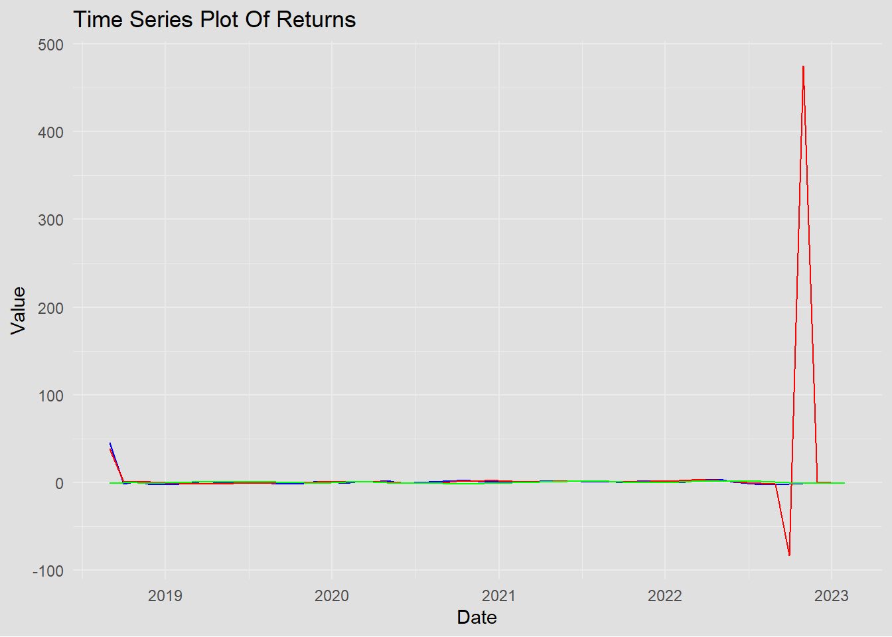
Stationarity
The plot shows a clear upward trend in both Mean Sale Price and Mean Home Value over time until what appears to be a sharp drop in the most recent data point. This trend indicates that the series is likely non-stationary because the mean of the series is changing over time. The presence of a trend is a strong indication that at least the mean is not constant. The drop at the end could be due to the incident of Covid-19, an extreme value, or a real market crash. ## Volatility The series seems to exhibit periods of different volatility levels. Initially, there is some fluctuation, but the variations appear relatively stable and small. However, the spike at the end of the series suggests a sudden increase in volatility. Volatility in financial time series is often clustered; periods of high volatility are followed by periods of high volatility, and periods of low volatility are followed by periods of low volatility. This plot suggests such clustering might be present, although the spike at the end may skew this perception.
First Fit a Linear Model
I think that the home value can be consisted of the sale price and rental price
Code
library(caret)Loading required package: lattice
Attaching package: 'caret'The following object is masked from 'package:purrr':
lift
Call:
lm(formula = Mean.Home.Value ~ Mean.Sale.Price + mean, data = df1)
Residuals:
Min 1Q Median 3Q Max
-1077736 -23052 3736 58944 139684
Coefficients:
Estimate Std. Error t value Pr(>|t|)
(Intercept) 4.130e+05 4.781e+05 0.864 0.392
Mean.Sale.Price 9.340e-01 1.973e-01 4.733 1.8e-05 ***
mean -1.092e+02 1.869e+02 -0.585 0.561
---
Signif. codes: 0 '***' 0.001 '**' 0.01 '*' 0.05 '.' 0.1 ' ' 1
Residual standard error: 162500 on 51 degrees of freedom
Multiple R-squared: 0.347, Adjusted R-squared: 0.3214
F-statistic: 13.55 on 2 and 51 DF, p-value: 1.904e-05The coefficients are significant
Code
library(car)Loading required package: carData
Attaching package: 'car'The following object is masked from 'package:dplyr':
recodeThe following object is masked from 'package:purrr':
someCode
vif(model)Mean.Sale.Price mean
1.362895 1.362895 We can see that the Mean sale price and rental price have much relatively low VIF scores. Therefore, we can keep them in modeling:
Evaluations of the model
Code
predictions <- predict(model, newdata = test)
SSE <- sum((predictions - test$Mean.Home.Value)^2)
SST <- sum((test$Mean.Home.Value - mean(train$Mean.Home.Value))^2)
rsquared_test <- 1 - SSE/SST
rsquared_test [1] 0.8123188The rsquared is relatively small, we can now keep the model for later analysis.
Prepare to fit the model and get residuals
Code
lm.residuals <- residuals(model)
plot(lm.residuals, ylab = "Residuals", main = "Residuals ")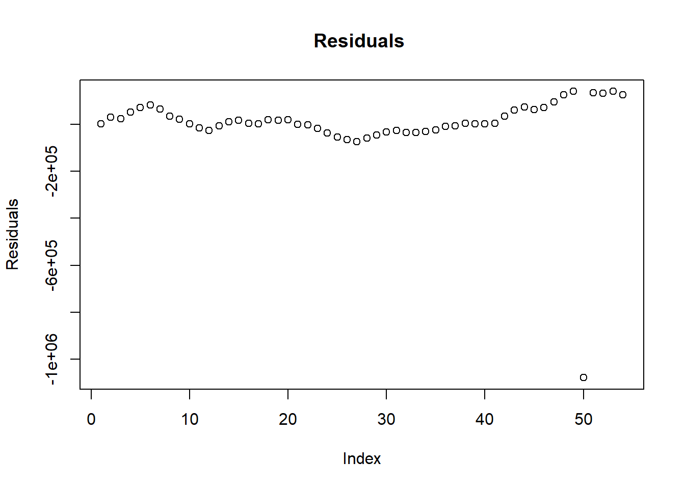
check correlation in these residuals using an ACF plot
Code
acf_plot <- ggAcf(lm.residuals) +
labs(title = "ACF for Model Residuals") +
theme(
panel.background = element_rect(fill = "#E0E0E0", color = "#E0E0E0"),
plot.background = element_rect(fill = "#E0E0E0", color = "#E0E0E0")
)
pacf_plot <- ggPacf(lm.residuals) +
labs(title = "PACF for Model Residuals") +
theme(
panel.background = element_rect(fill = "#E0E0E0", color = "#E0E0E0"),
plot.background = element_rect(fill = "#E0E0E0", color = "#E0E0E0")
)
# Combine the plots
grid.arrange(acf_plot, pacf_plot, ncol = 1) 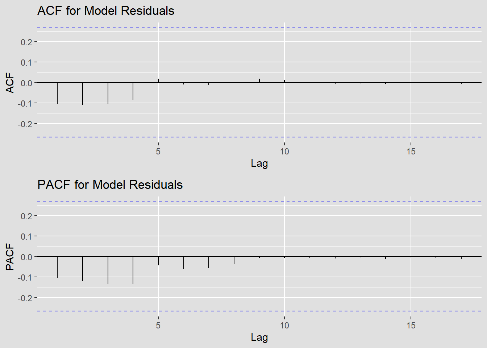
Based on the acf and pacf, we can choose p = 0,1,2,3 q = 0,1,2
Code
library(tseries)
adf.test(lm.residuals)
Augmented Dickey-Fuller Test
data: lm.residuals
Dickey-Fuller = -4.5916, Lag order = 3, p-value = 0.01
alternative hypothesis: stationaryWE can see that there are little correlations left. The lm residuals are stationary now.
Fit an appropriate AR+ARCH/ARMA+GARCH or ARIMA-ARCH/GARCH
First, determine the ARIMA model using model diagnostic
Code
# Reference from the lab 6 part 1 demo:
temp.ts = log(diff(lm.residuals))
d=0
i=1
temp= data.frame()
ls=matrix(rep(NA,6*71),nrow=71)
for (p in 1:5)
{
for(q in 1:5)
{
for(d in 0:2)#
{
if(p-1+d+q-1<=8)
{
model<- Arima(temp.ts,order=c(p-1,d,q-1),include.drift=FALSE)
ls[i,]= c(p-1,d,q-1,model$aic,model$bic,model$aicc)
i=i+1
#print(i)
}
}
}
}
temp= as.data.frame(ls)
names(temp)= c("p","d","q","AIC","BIC","AICc")
knitr::kable(temp)| p | d | q | AIC | BIC | AICc |
|---|---|---|---|---|---|
| 0 | 0 | 0 | 97.45315 | 100.18774 | 97.91469 |
| 0 | 1 | 0 | 107.36990 | 108.70210 | 107.52375 |
| 0 | 2 | 0 | 136.14317 | 137.43900 | 136.30317 |
| 0 | 0 | 1 | 97.72055 | 101.82243 | 98.68055 |
| 0 | 1 | 1 | 97.19728 | 99.86169 | 97.67728 |
| 0 | 2 | 1 | 109.48434 | 112.07602 | 109.98434 |
| 0 | 0 | 2 | 99.71110 | 105.18029 | 101.37777 |
| 0 | 1 | 2 | 98.08008 | 102.07670 | 99.08008 |
| 0 | 2 | 2 | 100.84798 | 104.73549 | 101.89146 |
| 0 | 0 | 3 | 101.63650 | 108.47298 | 104.24520 |
| 0 | 1 | 3 | 99.15448 | 104.48330 | 100.89361 |
| 0 | 2 | 3 | 100.96699 | 106.15033 | 102.78517 |
| 0 | 0 | 4 | 98.32414 | 106.52792 | 102.14232 |
| 0 | 1 | 4 | 96.49156 | 103.15259 | 99.21884 |
| 0 | 2 | 4 | 101.82668 | 108.30587 | 104.68383 |
| 1 | 0 | 0 | 98.48268 | 102.58457 | 99.44268 |
| 1 | 1 | 0 | 107.31463 | 109.97904 | 107.79463 |
| 1 | 2 | 0 | 130.00856 | 132.60023 | 130.50856 |
| 1 | 0 | 1 | 99.71315 | 105.18233 | 101.37982 |
| 1 | 1 | 1 | 99.01782 | 103.01443 | 100.01782 |
| 1 | 2 | 1 | 109.92294 | 113.81045 | 110.96642 |
| 1 | 0 | 2 | 101.50948 | 108.34596 | 104.11817 |
| 1 | 1 | 2 | 99.91203 | 105.24085 | 101.65116 |
| 1 | 2 | 2 | 102.39524 | 107.57859 | 104.21342 |
| 1 | 0 | 3 | 102.90624 | 111.11002 | 106.72443 |
| 1 | 1 | 3 | 100.00410 | 106.66512 | 102.73137 |
| 1 | 2 | 3 | 102.64853 | 109.12772 | 105.50568 |
| 1 | 0 | 4 | 100.32335 | 109.89442 | 105.65668 |
| 1 | 1 | 4 | 98.17100 | 106.16423 | 102.17100 |
| 1 | 2 | 4 | 101.91516 | 109.69018 | 106.11516 |
| 2 | 0 | 0 | 100.19843 | 105.66761 | 101.86509 |
| 2 | 1 | 0 | 97.91843 | 101.91504 | 98.91843 |
| 2 | 2 | 0 | 120.71913 | 124.60664 | 121.76261 |
| 2 | 0 | 1 | 101.67495 | 108.51143 | 104.28364 |
| 2 | 1 | 1 | 97.80713 | 103.13595 | 99.54626 |
| 2 | 2 | 1 | 101.76404 | 106.94739 | 103.58222 |
| 2 | 0 | 2 | 103.40488 | 111.60866 | 107.22307 |
| 2 | 1 | 2 | 99.68591 | 106.34694 | 102.41319 |
| 2 | 2 | 2 | 100.81063 | 107.28982 | 103.66778 |
| 2 | 0 | 3 | 101.43536 | 111.00643 | 106.76869 |
| 2 | 1 | 3 | 98.94989 | 106.94312 | 102.94989 |
| 2 | 2 | 3 | 102.04989 | 109.82491 | 106.24989 |
| 2 | 0 | 4 | 99.25180 | 110.19016 | 106.45180 |
| 2 | 1 | 4 | 100.21015 | 109.53558 | 105.81015 |
| 2 | 2 | 4 | 100.95327 | 110.02412 | 106.84800 |
| 3 | 0 | 0 | 99.33167 | 106.16815 | 101.94036 |
| 3 | 1 | 0 | 97.99772 | 103.32654 | 99.73685 |
| 3 | 2 | 0 | 109.96631 | 115.14965 | 111.78449 |
| 3 | 0 | 1 | 101.26710 | 109.47087 | 105.08528 |
| 3 | 1 | 1 | 99.55553 | 106.21655 | 102.28280 |
| 3 | 2 | 1 | 102.21620 | 108.69538 | 105.07334 |
| 3 | 0 | 2 | 99.34029 | 108.91136 | 104.67363 |
| 3 | 1 | 2 | 99.42824 | 107.42147 | 103.42824 |
| 3 | 2 | 2 | 102.50291 | 110.27793 | 106.70291 |
| 3 | 0 | 3 | 101.19914 | 112.13751 | 108.39914 |
| 3 | 1 | 3 | 99.33271 | 108.65814 | 104.93271 |
| 3 | 2 | 3 | 103.01403 | 112.08489 | 108.90877 |
| 3 | 0 | 4 | 104.20091 | 116.50657 | 113.67459 |
| 3 | 1 | 4 | 101.16082 | 111.81846 | 108.73977 |
| 4 | 0 | 0 | 101.16119 | 109.36496 | 104.97937 |
| 4 | 1 | 0 | 99.85388 | 106.51490 | 102.58115 |
| 4 | 2 | 0 | 111.92853 | 118.40772 | 114.78568 |
| 4 | 0 | 1 | 101.61498 | 111.18605 | 106.94831 |
| 4 | 1 | 1 | 101.11461 | 109.10784 | 105.11461 |
| 4 | 2 | 1 | 104.02255 | 111.79757 | 108.22255 |
| 4 | 0 | 2 | 100.73599 | 111.67436 | 107.93599 |
| 4 | 1 | 2 | 101.42404 | 110.74947 | 107.02404 |
| 4 | 2 | 2 | 104.34488 | 113.41574 | 110.23962 |
| 4 | 0 | 3 | 102.73352 | 115.03919 | 112.20721 |
| 4 | 1 | 3 | 100.78264 | 111.44028 | 108.36159 |
| 4 | 0 | 4 | 101.54131 | 115.21426 | 113.76353 |
Evaluations using AIC, BIC, and AICc
Code
temp[which.min(temp$AIC),] p d q AIC BIC AICc
14 0 1 4 96.49156 103.1526 99.21884Code
temp[which.min(temp$BIC),] p d q AIC BIC AICc
5 0 1 1 97.19728 99.86169 97.67728Code
temp[which.min(temp$AICc),] p d q AIC BIC AICc
5 0 1 1 97.19728 99.86169 97.67728We can see that for (0,1,1) and (0,1,4), the AIC, BIC, and AICc are different. We should choose from them.
Compare ARIMA Models for (4,0,4) and ARIMA (0,0,0)
Code
set.seed(236)
model_output21 <- capture.output(sarima(lm.residuals, 0,1,1)) 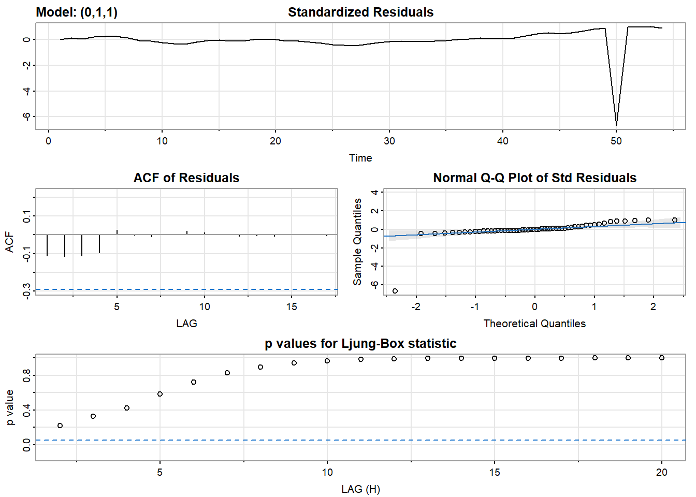
Code
model_output22 <- capture.output(sarima(lm.residuals, 0,1,4)) 
Code
cat(model_output21[120:147], model_output21[length(model_output21)], sep = "\n")arima(x = xdata, order = c(p, d, q), seasonal = list(order = c(P, D, Q), period = S),
xreg = constant, transform.pars = trans, fixed = fixed, optim.control = list(trace = trc,
REPORT = 1, reltol = tol))
Coefficients:
ma1 constant
-1.0000 -575.8749
s.e. 0.0519 1390.1147
sigma^2 estimated as 2.532e+10: log likelihood = -712, aic = 1430.01
$degrees_of_freedom
[1] 51
$ttable
Estimate SE t.value p.value
ma1 -1.0000 0.0519 -19.2505 0.0000
constant -575.8749 1390.1147 -0.4143 0.6804
$AIC
[1] 26.98128
$AICc
[1] 26.98581
$BIC
[1] 27.09281Code
cat(model_output22[50:80], model_output22[length(model_output22)], sep = "\n") xreg = constant, transform.pars = trans, fixed = fixed, optim.control = list(trace = trc,
REPORT = 1, reltol = tol))
Coefficients:
ma1 ma2 ma3 ma4 constant
-1.1837 0.0274 0.0310 0.1253 -744.0292
s.e. 0.1572 0.2249 0.2357 0.1388 784.9040
sigma^2 estimated as 2.335e+10: log likelihood = -710.54, aic = 1433.07
$degrees_of_freedom
[1] 48
$ttable
Estimate SE t.value p.value
ma1 -1.1837 0.1572 -7.5293 0.0000
ma2 0.0274 0.2249 0.1216 0.9037
ma3 0.0310 0.2357 0.1315 0.8959
ma4 0.1253 0.1388 0.9032 0.3709
constant -744.0292 784.9040 -0.9479 0.3479
$AIC
[1] 27.03906
$AICc
[1] 27.06315
$BIC
[1] 27.26212
NABased on the model comparsion and diagnostic, I think that ARIMA Models for (0,1,1) is better with smaller evaluation matrices and it is more suitable and proper based on acf and pacf plots. In addition, the acf of residule is also more stationary.
Fit the best one ARIMA(0,1,1)
Code
mean_value <- mean(temp.ts, na.rm = TRUE)
# Replace NaN values with the mean
temp.ts[is.na(temp.ts)] <- mean_valueCode
fit2 <- arima(temp.ts, order = c(0,1,1))
summary(fit2)
Call:
arima(x = temp.ts, order = c(0, 1, 1))
Coefficients:
ma1
-0.8543
s.e. 0.0857
sigma^2 estimated as 0.8381: log likelihood = -69.85, aic = 143.7
Training set error measures:
ME RMSE MAE MPE MAPE MASE
Training set -0.006216912 0.9068076 0.5400164 -0.8352652 5.733552 0.7704727
ACF1
Training set -0.03946064get the residuals of the arima model
Code
arima.res <- residuals(fit2)
# Plot the residuals
acf_plot <- ggAcf(arima.res) +
labs(title = "ACF for Model Residuals") +
theme(
panel.background = element_rect(fill = "#E0E0E0", color = "#E0E0E0"),
plot.background = element_rect(fill = "#E0E0E0", color = "#E0E0E0")
)
pacf_plot <- ggPacf(arima.res) +
labs(title = "PACF for Model Residuals") +
theme(
panel.background = element_rect(fill = "#E0E0E0", color = "#E0E0E0"),
plot.background = element_rect(fill = "#E0E0E0", color = "#E0E0E0")
)
# Combine the plots
grid.arrange(acf_plot, pacf_plot, ncol = 1) 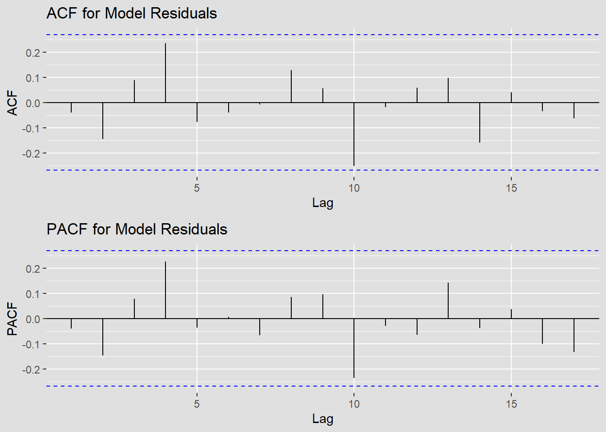
We can see that mostly, the residual is stationary however the residuals of ARIMA model indicates some flutucations. In this case, I think that we can try to fit an ARCH/GARCH model.
Therefore, I think we can further making analysis by adding GARCH models to see if we should use it.
Model Diagnostics For ARCH/GARCH model (No need in my case, Just to Verify)
Code
acf_plot <- ggAcf(arima.res^2) +
labs(title = "ACF for Squared Model Residuals") +
theme(
panel.background = element_rect(fill = "#E0E0E0", color = "#E0E0E0"),
plot.background = element_rect(fill = "#E0E0E0", color = "#E0E0E0")
)
pacf_plot <- ggPacf(arima.res^2) +
labs(title = "PACF for Squared Model Residuals") +
theme(
panel.background = element_rect(fill = "#E0E0E0", color = "#E0E0E0"),
plot.background = element_rect(fill = "#E0E0E0", color = "#E0E0E0")
)
# Combine the plots
grid.arrange(acf_plot, pacf_plot, ncol = 1) 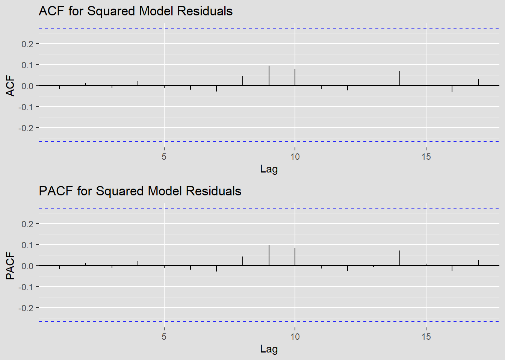
We can see that it acutally already sufficient to just use ARIMA model. GARCH model is not required since it is already pretty good in removing correlations. The residual and squared residual are stationary.
However, I still think that I can at least try to make a further diagnostic and compare the results to verify that I do not need to fit GARCH model.
[1] 29
Call:
garch(x = arima.res, order = c(q, p), trace = F)
Coefficient(s):
a0 a1 a2 a3 a4 a5 b1
6.293e-01 2.421e-15 1.233e-02 9.166e-02 1.292e-01 3.065e-02 7.709e-02 From here, I think that garch(5,1) is a good choice
Code
library(fGarch)
summary(garchFit(~garch(5,1), arima.res,trace = F))
Title:
GARCH Modelling
Call:
garchFit(formula = ~garch(5, 1), data = arima.res, trace = F)
Mean and Variance Equation:
data ~ garch(5, 1)
<environment: 0x000001e52aff0358>
[data = arima.res]
Conditional Distribution:
norm
Coefficient(s):
mu omega alpha1 alpha2 alpha3 alpha4
-6.2169e-02 8.3807e-07 1.0000e-08 1.0000e-08 1.0000e-08 9.2063e-02
alpha5 beta1
1.0279e-01 9.2259e-01
Std. Errors:
based on Hessian
Error Analysis:
Estimate Std. Error t value Pr(>|t|)
mu -6.217e-02 1.295e-01 -0.480 0.631
omega 8.381e-07 4.668e-02 0.000 1.000
alpha1 1.000e-08 1.437e-01 0.000 1.000
alpha2 1.000e-08 2.182e-01 0.000 1.000
alpha3 1.000e-08 NaN NaN NaN
alpha4 9.206e-02 NaN NaN NaN
alpha5 1.028e-01 2.194e-01 0.468 0.639
beta1 9.226e-01 1.042e-01 8.856 <2e-16 ***
---
Signif. codes: 0 '***' 0.001 '**' 0.01 '*' 0.05 '.' 0.1 ' ' 1
Log Likelihood:
-65.04509 normalized: -1.227266
Description:
Mon Nov 20 22:34:34 2023 by user: yzh20
Standardised Residuals Tests:
Statistic p-Value
Jarque-Bera Test R Chi^2 44.4248571 2.255615e-10
Shapiro-Wilk Test R W 0.8789801 6.678698e-05
Ljung-Box Test R Q(10) 8.6460018 5.659961e-01
Ljung-Box Test R Q(15) 10.7960500 7.669135e-01
Ljung-Box Test R Q(20) 14.7059080 7.929810e-01
Ljung-Box Test R^2 Q(10) 1.0064352 9.998227e-01
Ljung-Box Test R^2 Q(15) 2.8524750 9.997063e-01
Ljung-Box Test R^2 Q(20) 13.9148641 8.347861e-01
LM Arch Test R TR^2 3.3655148 9.923671e-01
Information Criterion Statistics:
AIC BIC SIC HQIC
2.756418 3.053821 2.718346 2.870785 The results shows that (5,1) is not an optimal fit. The coefficients are not significant.
Therefore, let us try (1,0)
Try to compare with Garch(1,0)
Code
summary(garchFit(~garch(1,0), arima.res,trace = F))
Title:
GARCH Modelling
Call:
garchFit(formula = ~garch(1, 0), data = arima.res, trace = F)
Mean and Variance Equation:
data ~ garch(1, 0)
<environment: 0x000001e5332b85a8>
[data = arima.res]
Conditional Distribution:
norm
Coefficient(s):
mu omega alpha1
-0.00621650 0.82226165 0.00000001
Std. Errors:
based on Hessian
Error Analysis:
Estimate Std. Error t value Pr(>|t|)
mu -6.216e-03 1.283e-01 -0.048 0.961
omega 8.223e-01 1.655e-01 4.969 6.73e-07 ***
alpha1 1.000e-08 9.213e-02 0.000 1.000
---
Signif. codes: 0 '***' 0.001 '**' 0.01 '*' 0.05 '.' 0.1 ' ' 1
Log Likelihood:
-70.01777 normalized: -1.32109
Description:
Mon Nov 20 22:34:34 2023 by user: yzh20
Standardised Residuals Tests:
Statistic p-Value
Jarque-Bera Test R Chi^2 243.8613995 0.000000e+00
Shapiro-Wilk Test R W 0.8077994 7.558550e-07
Ljung-Box Test R Q(10) 11.1170806 3.484694e-01
Ljung-Box Test R Q(15) 14.1037596 5.176748e-01
Ljung-Box Test R Q(20) 17.1059480 6.460837e-01
Ljung-Box Test R^2 Q(10) 1.2640754 9.995016e-01
Ljung-Box Test R^2 Q(15) 1.6742729 9.999910e-01
Ljung-Box Test R^2 Q(20) 3.3919710 9.999883e-01
LM Arch Test R TR^2 12.3534533 4.177270e-01
Information Criterion Statistics:
AIC BIC SIC HQIC
2.755388 2.866914 2.749426 2.798275 Now, it seems that the alpha1 is still not significant. Therefore, in this case, we can stop with arima model. No additional Garch is needed.
However, we still can compare the prediction fits.
Forecast
ARIMA (0,1,1)
Code
# Autoplot with custom colors
plot_fit_ <- autoplot(forecast(fit2,10)) +
theme(
panel.background = element_rect(fill = "#E0E0E0", color = "#E0E0E0"),
plot.background = element_rect(fill = "#E0E0E0", color = "#E0E0E0"),
legend.background = element_rect(fill = "#E0E0E0", color = "#E0E0E0"),
legend.key = element_rect(fill = "#E0E0E0", color = "#E0E0E0")
)
# Display the plot
print(plot_fit_)
By comparing the fits, I think that the ARIMA model alone is better. We do not need the GArch in my case
Final model: ARIMA (0,1,1) and equation
Box Ljung Test
Code
box_ljung_test <- Box.test(arima.res, lag = 10, type = "Ljung-Box")
# Display the test results
box_ljung_test
Box-Ljung test
data: arima.res
X-squared = 11.117, df = 10, p-value = 0.3485the p-value is above a significance level 0.05, therefore, I do not reject the null hypothesis. This suggests that the residuals do not exhibit autocorrelation and that the model is adequate. This conclusion alignes with my model diagnostics and forecasting comparesion. The ARIMA(0,2,3) alone is enough in my case.
Equation
The ARIMA(0,1,1) model is defined as:
\[ (1 - B) X_t = (1 + \theta_1B)a_t \]
where: - ( B ) is the backshift operator, - ( X_t ) is the time series observation at time t, - ( (1 - B) ) denotes first-order differencing, - ( _1 ) is the parameter of the moving average part of the model, - ( a_t ) is the error term at time t.
This model is a simplification of higher-order ARIMA models and is used when the data exhibits a level of temporal dependency that can be explained with a single differencing and a single lag in the moving average component.
No Garch components since in my case the ARIMA is better and sufficient.